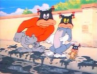

Like many animated cartoons from the 1930s to the 1950s, Tom and Jerry featured racial stereotypes. After explosions, for example, characters with blasted faces would resemble blackface stereotypes, with large lips and bow-tied hair. Perhaps the most controversial element of the show is the character Mammy Two Shoes, a poor black maid who speaks in a stereotypical "black accent". Joseph Barbera, who was responsible for these gags, claimed that they did not reflect his racial opinion; they were just reflecting what was common in society and cartoons at the time and were meant to be humorous. Today, the blackface gags are often censored when these shots are aired.
Following the 1949 re-issue of the 1943 Tom and Jerry short The Lonesome Mouse, the NAACP, which had begun protesting stereotypical and racist depictions of African-Americans in Hollywood cinema, began a campaign against the use of the maid character in the Tom and Jerry shorts. Lillian Randolph left her role as the voice of Mammy Two Shoes in 1952 to instead take a job on television in Amos & Andy, and Hanna and Barbera retired the character at that time.
In the 1960s, shorts featuring Mammy Two Shoes were re-animated in part by Chuck Jones' team at MGM, alongside their work on the newer entries produced by Jones, in order to be shown on television. These versions of the shorts replace the African-American maid with a white woman, voiced by June Foray with an Irish accent. These versions of the Tom and Jerry shorts were broadcast on television until the MGM catalog's acquisition by Turner in 1986. Turner redubbed Mammy Two Shoes' voice in these shorts in the mid-1990s to make the character sound less stereotypical.
Two shorts – His Mouse Friday, which depicts cannibals, and A Mouse in the House, which shows Mammy getting spanked repeatedly by Tom and Butch in the end resulting in racial abuse – have been removed from circulation. Two others in particular – Casanova Cat, which features a scene where Jerry's face is blackened by Tom with cigar smoke and he is forced to perform a minstrel dance, and Mouse Cleaning, where Tom is shown with blackface speaking in a stereotypical "Negro dialect" – were omitted from DVD/Blu-ray releases. Notably the other two – Fraidy Cat, showed Tom biting Mammy in the rear near the end, and The Mouse Comes to Dinner, including Jerry briefly dressing up as a Native American stereotype during the beginning – have Mammy edited in complete absence.
At the start of the 2005 Tom and Jerry Spotlight Collection: Vol 2. DVD set, a disclaimer by actress and comedian Whoopi Goldberg warns viewers about the potentially offensive material in the cartoons. Goldberg's disclaimer emphasizes that the racial and ethnic stereotypes present in the shorts were "wrong then and they are wrong today", borrowing a phrase used in disclaimers done for Warner Bros. Looney Tunes Golden Collection DVD sets. This disclaimer is also used in the Tom and Jerry Golden Collection: Volume 1 Blu-ray/DVD/digital release as well.
"The cartoons you are about to see are products of their time. They may depict some of the ethnic and racial prejudices that were commonplace in U.S. society. These depictions were wrong then and they are wrong today. While the following does not represent the Warner Bros. view of today's society, these cartoons are being presented as they were originally created, because to do otherwise would be the same as claiming that these prejudices never existed."
— Disclaimer by Whoopi Goldberg
— Disclaimer by Whoopi Goldberg
Since 2020, all episodes featuring Mammy Two Shoes are no longer seen on Cartoon Network and Boomerang and are removed from the Boomerang app. There are other shorts (The Lonesome Mouse, Blue Cat Blues, and The Mouse from H.U.N.G.E.R.) that are found inappropriate for the intended audiences rather than just having racist contents and are censored from the two channels as well.
In 2006, the British version of the Boomerang channel made plans to edit Tom and Jerry cartoons being aired in the UK where the characters were seen to be smoking. There was a subsequent investigation by UK media watchdog Ofcom. It has also taken the U.S. approach by censoring blackface gags, though this seems to be random as not all scenes of this type are cut. One Gene Deitch-era short, Buddies Thicker Than Water, is shortened as one scene involves drunkenness.
In 2013, it was reported that Cartoon Network of Brazil censored 27 shorts on the grounds of being "politically incorrect". In an official release, the channel confirmed that it had censored only two shorts, The Two Mouseketeers and Heavenly Puss "by editorial issues and appropriateness of the content to the target audience—children of 7 to 11 years".